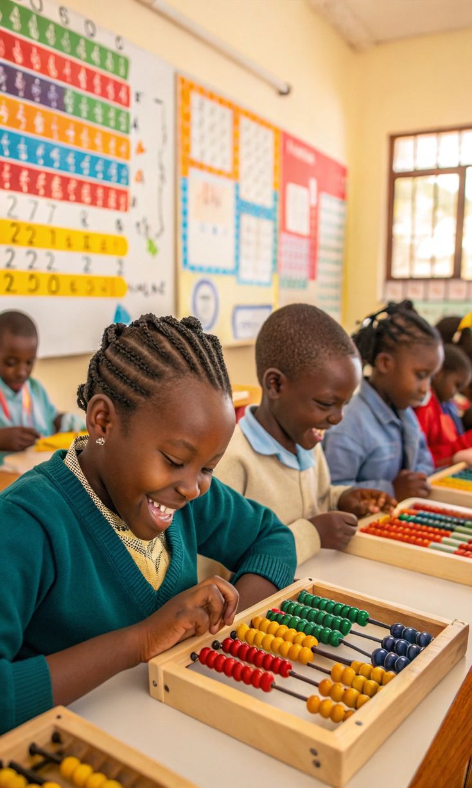

Montessori at
Martins School
A child-led philosophy where curiosity is the curriculum and every day is a discovery.
by the Child
Developed by Dr. Maria Montessori, this approach creates a prepared environment where children move freely, choose their activities, and develop at their own natural pace — building deep concentration, independence, and a love of learning.
At Martins School, our AMI-certified Montessori educators guide without directing — observing each child's interests and providing exactly the right challenge at the right time. No two days look the same.
Apply to Montessori
Our classrooms are built around five time-tested principles that make Montessori education uniquely powerful.
Child as the Centre
Every lesson, material, and space is designed around the individual child's developmental stage.
Freedom & Structure
Children freely choose activities within a carefully prepared, structured environment.
Hands-On Materials
Tactile, self-correcting materials that make abstract concepts concrete and tangible.
Mixed-Age Groups
Older children mentor younger ones, reinforcing learning while building empathy and leadership.
Observation-Led Teaching
Educators observe deeply before intervening, allowing children to resolve challenges independently.
Each Montessori stage is a carefully designed environment that matches the child's current developmental needs.
Toddler
Ages 18 months – 3 years. Sensory exploration, early language, movement, and foundational independence skills.
Preschool
Ages 3–5. Practical life, sensorial, language, and mathematics in a rich, nurturing classroom.
Primary
Ages 5–11. Reading, writing, numeracy, and cultural studies as children prepare for Primary transition.

Montessori Classroom
8:00am — Morning Work Cycle
Children choose their work from the shelves, engaging in deep, uninterrupted concentration for up to 3 hours.
11:00am — Outdoor & Snack Time
Fresh air, movement, and nutrition — essential parts of the Montessori prepared environment.
11:30am — Group Lessons & Circle
Language, music, cultural studies, and community-building through group activities.
1:00pm — Lunch & Rest
Children learn to serve themselves and each other — practical life at its most meaningful.
Practical Life
Pouring, folding, sweeping — activities that build fine motor skills, concentration, and self-sufficiency.
Sensorial
Specially crafted materials that refine the senses and prepare the mind for abstract thought.
Language
Phonics, vocabulary, reading, and writing introduced through tactile sandpaper letters and moveable alphabets.
Mathematics
Quantities, numeration, and operations made concrete through beads, rods, and number boards.
Cultural Studies
Geography, history, science, music, and art — a broad view of the world that nurtures global citizens.
Your Child's Journey?
Spaces in our Montessori programme are limited and fill quickly. We welcome children from 18 months through Primary. Early application is strongly encouraged.